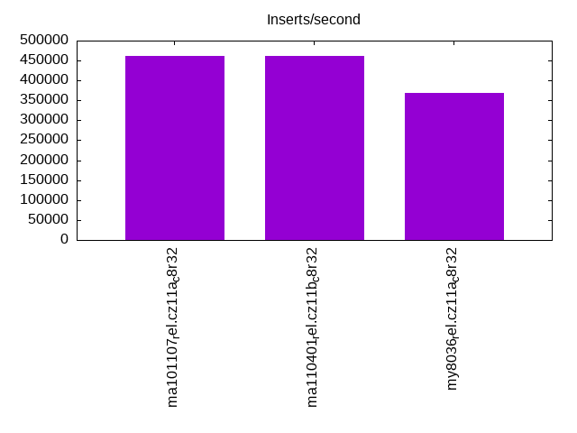
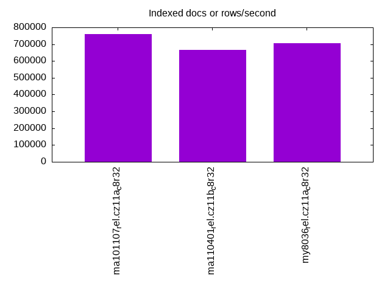
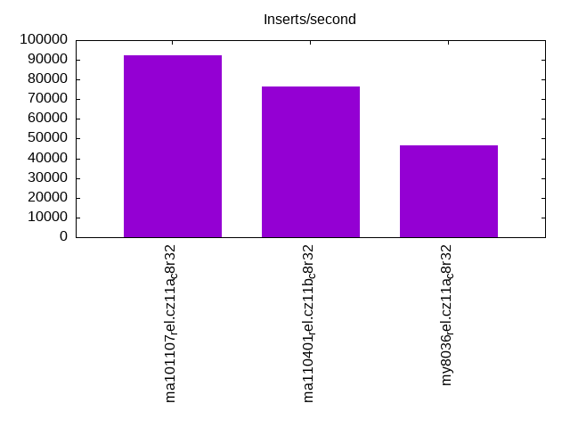
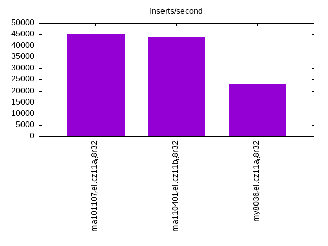
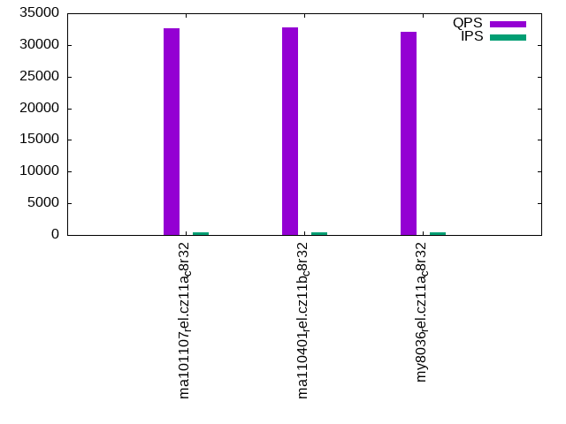
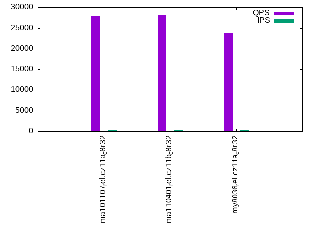
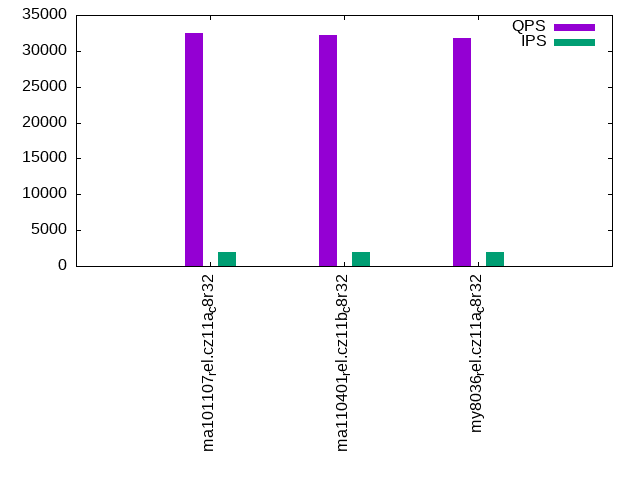
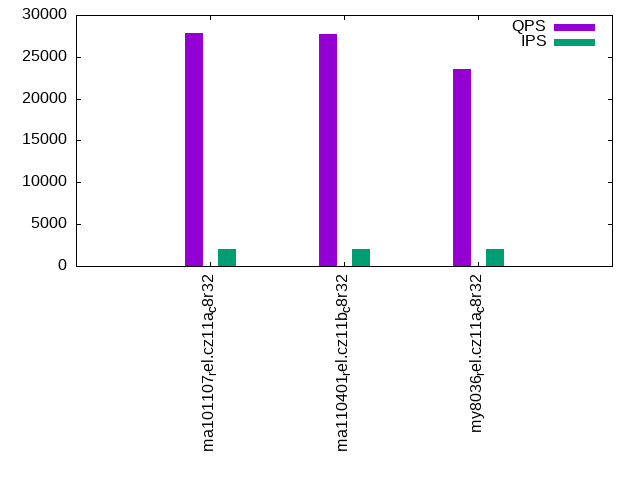
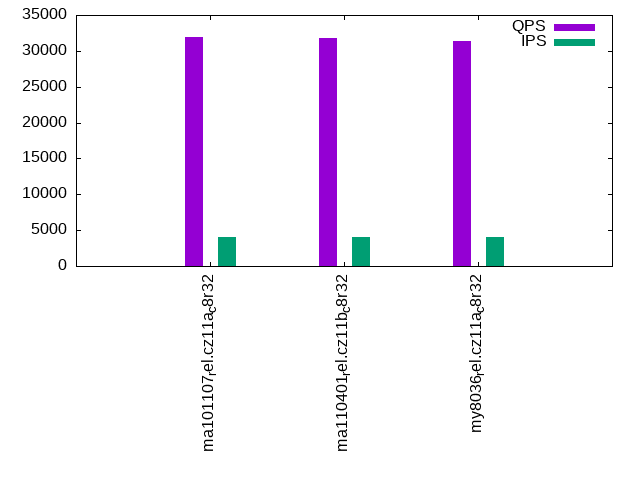

This is a report for the insert benchmark with 48M docs and 4 client(s). It is generated by scripts (bash, awk, sed) and Tufte might not be impressed. An overview of the insert benchmark is here and a short update is here. Below, by DBMS, I mean DBMS+version.config. An example is my8020.c10b40 where my means MySQL, 8020 is version 8.0.20 and c10b40 is the name for the configuration file.
The test server has 8 AMD cores, 32G RAM and an NVMe SSD. It is described here as the ASUS PN53. The benchmark was run with 1 client and there were 1 or 3 connections per client (1 for queries or inserts without rate limits, 1+1 for rate limited inserts+deletes). It uses 4 tables with a table per client. It loads 12M rows per table without secondary indexes, creates 3 secondary indexes per table, then inserts 40 rows per table with a delete per insert to avoid growing the table. It then does 6 read+write tests for 1800s each that do queries as fast as possible with 100,100,500,500,1000,1000 inserts/s and the same for deletes/s per client concurrent with the queries. The database is cached in memory. Clients and the DBMS share one server. The per-database configs are in the per-database subdirectories here.
The tested DBMS are:
The numbers are inserts/s for l.i0, l.i1 and l.i2, indexed docs (or rows) /s for l.x and queries/s for qr100, qp100 thru qr1000, qp1000" The values are the average rate over the entire test for inserts (IPS) and queries (QPS). The range of values for IPS and QPS is split into 3 parts: bottom 25%, middle 50%, top 25%. Values in the bottom 25% have a red background, values in the top 25% have a green background and values in the middle have no color. A gray background is used for values that can be ignored because the DBMS did not sustain the target insert rate. Red backgrounds are not used when the minimum value is within 80% of the max value.
| dbms | l.i0 | l.x | l.i1 | l.i2 | qr100 | qp100 | qr500 | qp500 | qr1000 | qp1000 |
|---|---|---|---|---|---|---|---|---|---|---|
| ma101107_rel.cz11a_c8r32 | 461538 | 761906 | 92219 | 45134 | 32657 | 28016 | 32449 | 27863 | 31928 | 27489 |
| ma110401_rel.cz11b_c8r32 | 461538 | 666668 | 76509 | 43716 | 32780 | 28093 | 32263 | 27772 | 31845 | 27413 |
| my8036_rel.cz11a_c8r32 | 369231 | 705884 | 46394 | 23375 | 32064 | 23808 | 31779 | 23541 | 31420 | 23295 |
This table has relative throughput, throughput for the DBMS relative to the DBMS in the first line, using the absolute throughput from the previous table. Values less than 0.95 have a yellow background. Values greater than 1.05 have a blue background.
| dbms | l.i0 | l.x | l.i1 | l.i2 | qr100 | qp100 | qr500 | qp500 | qr1000 | qp1000 |
|---|---|---|---|---|---|---|---|---|---|---|
| ma101107_rel.cz11a_c8r32 | 1.00 | 1.00 | 1.00 | 1.00 | 1.00 | 1.00 | 1.00 | 1.00 | 1.00 | 1.00 |
| ma110401_rel.cz11b_c8r32 | 1.00 | 0.88 | 0.83 | 0.97 | 1.00 | 1.00 | 0.99 | 1.00 | 1.00 | 1.00 |
| my8036_rel.cz11a_c8r32 | 0.80 | 0.93 | 0.50 | 0.52 | 0.98 | 0.85 | 0.98 | 0.84 | 0.98 | 0.85 |
This lists the average rate of inserts/s for the tests that do inserts concurrent with queries. For such tests the query rate is listed in the table above. The read+write tests are setup so that the insert rate should match the target rate every second. Cells that are not at least 95% of the target have a red background to indicate a failure to satisfy the target.
| dbms | qr100.L1 | qp100.L2 | qr500.L3 | qp500.L4 | qr1000.L5 | qp1000.L6 |
|---|---|---|---|---|---|---|
| ma101107_rel.cz11a_c8r32 | 399 | 399 | 1994 | 1994 | 3989 | 3989 |
| ma110401_rel.cz11b_c8r32 | 399 | 399 | 1994 | 1994 | 3989 | 3989 |
| my8036_rel.cz11a_c8r32 | 399 | 399 | 1994 | 1994 | 3989 | 3989 |
| target | 400 | 400 | 2000 | 2000 | 4000 | 4000 |
l.i0: load without secondary indexes. Graphs for performance per 1-second interval are here.
Average throughput:
Insert response time histogram: each cell has the percentage of responses that take <= the time in the header and max is the max response time in seconds. For the max column values in the top 25% of the range have a red background and in the bottom 25% of the range have a green background. The red background is not used when the min value is within 80% of the max value.
| dbms | 256us | 1ms | 4ms | 16ms | 64ms | 256ms | 1s | 4s | 16s | gt | max |
|---|---|---|---|---|---|---|---|---|---|---|---|
| ma101107_rel.cz11a_c8r32 | 90.347 | 9.297 | 0.321 | 0.018 | 0.017 | 0.203 | |||||
| ma110401_rel.cz11b_c8r32 | 90.299 | 9.361 | 0.305 | 0.018 | 0.018 | 0.196 | |||||
| my8036_rel.cz11a_c8r32 | 97.057 | 2.472 | 0.372 | 0.091 | 0.007 | 0.146 |
Performance metrics for the DBMS listed above. Some are normalized by throughput, others are not. Legend for results is here.
ips qps rps rmbps wps wmbps rpq rkbpq wpi wkbpi csps cpups cspq cpupq dbgb1 dbgb2 rss maxop p50 p99 tag 461538 0 0 0.0 1817.1 116.1 0.000 0.000 0.004 0.258 51490 73.5 0.112 13 3.2 34.0 3.3 0.203 132160 111481 ma101107_rel.cz11a_c8r32 461538 0 0 0.0 1811.9 115.9 0.000 0.000 0.004 0.257 53668 73.8 0.116 13 3.2 34.0 3.3 0.196 131553 99694 ma110401_rel.cz11b_c8r32 369231 0 0 0.0 1497.7 109.3 0.000 0.000 0.004 0.303 39456 64.2 0.107 14 3.2 33.8 5.1 0.146 102691 87330 my8036_rel.cz11a_c8r32
l.x: create secondary indexes.
Average throughput:
Performance metrics for the DBMS listed above. Some are normalized by throughput, others are not. Legend for results is here.
ips qps rps rmbps wps wmbps rpq rkbpq wpi wkbpi csps cpups cspq cpupq dbgb1 dbgb2 rss maxop p50 p99 tag 761906 0 0 0.0 6675.2 568.1 0.000 0.000 0.009 0.763 11343 45.2 0.015 5 7.2 38.0 6.9 0.001 NA NA ma101107_rel.cz11a_c8r32 666668 0 0 0.0 6068.1 498.4 0.000 0.000 0.009 0.765 11238 42.3 0.017 5 7.2 38.0 6.2 2.582 NA NA ma110401_rel.cz11b_c8r32 705884 0 3782 236.6 11907.1 730.1 0.005 0.343 0.017 1.059 34102 89.8 0.048 10 7.3 37.9 7.6 0.004 NA NA my8036_rel.cz11a_c8r32
l.i1: continue load after secondary indexes created with 50 inserts per transaction. Graphs for performance per 1-second interval are here.
Average throughput:
Insert response time histogram: each cell has the percentage of responses that take <= the time in the header and max is the max response time in seconds. For the max column values in the top 25% of the range have a red background and in the bottom 25% of the range have a green background. The red background is not used when the min value is within 80% of the max value.
| dbms | 256us | 1ms | 4ms | 16ms | 64ms | 256ms | 1s | 4s | 16s | gt | max |
|---|---|---|---|---|---|---|---|---|---|---|---|
| ma101107_rel.cz11a_c8r32 | 0.622 | 94.637 | 4.629 | 0.096 | 0.015 | nonzero | 0.266 | ||||
| ma110401_rel.cz11b_c8r32 | 3.075 | 87.926 | 7.640 | 1.328 | 0.029 | 0.002 | 0.714 | ||||
| my8036_rel.cz11a_c8r32 | 90.062 | 7.846 | 0.200 | 1.891 | 0.217 |
Delete response time histogram: each cell has the percentage of responses that take <= the time in the header and max is the max response time in seconds. For the max column values in the top 25% of the range have a red background and in the bottom 25% of the range have a green background. The red background is not used when the min value is within 80% of the max value.
| dbms | 256us | 1ms | 4ms | 16ms | 64ms | 256ms | 1s | 4s | 16s | gt | max |
|---|---|---|---|---|---|---|---|---|---|---|---|
| ma101107_rel.cz11a_c8r32 | 16.692 | 79.130 | 4.083 | 0.081 | 0.013 | 0.208 | |||||
| ma110401_rel.cz11b_c8r32 | 22.684 | 69.498 | 6.697 | 1.095 | 0.025 | 0.001 | 0.681 | ||||
| my8036_rel.cz11a_c8r32 | 8.039 | 82.425 | 7.593 | 0.149 | 1.794 | 0.217 |
Performance metrics for the DBMS listed above. Some are normalized by throughput, others are not. Legend for results is here.
ips qps rps rmbps wps wmbps rpq rkbpq wpi wkbpi csps cpups cspq cpupq dbgb1 dbgb2 rss maxop p50 p99 tag 92219 0 3797 14.8 9695.1 339.7 0.041 0.165 0.105 3.772 123979 83.2 1.344 72 10.0 40.8 10.1 0.266 23725 12041 ma101107_rel.cz11a_c8r32 76509 0 2911 11.4 8556.0 289.4 0.038 0.152 0.112 3.874 109946 67.3 1.437 70 10.1 41.0 10.1 0.714 19829 7842 ma110401_rel.cz11b_c8r32 46394 0 84 1.3 5139.4 193.7 0.002 0.029 0.111 4.276 30534 50.3 0.658 87 9.8 40.4 12.0 0.217 11537 6443 my8036_rel.cz11a_c8r32
l.i2: continue load after secondary indexes created with 5 inserts per transaction. Graphs for performance per 1-second interval are here.
Average throughput:
Insert response time histogram: each cell has the percentage of responses that take <= the time in the header and max is the max response time in seconds. For the max column values in the top 25% of the range have a red background and in the bottom 25% of the range have a green background. The red background is not used when the min value is within 80% of the max value.
| dbms | 256us | 1ms | 4ms | 16ms | 64ms | 256ms | 1s | 4s | 16s | gt | max |
|---|---|---|---|---|---|---|---|---|---|---|---|
| ma101107_rel.cz11a_c8r32 | 17.259 | 79.386 | 3.254 | 0.098 | 0.001 | 0.002 | 0.139 | ||||
| ma110401_rel.cz11b_c8r32 | 21.896 | 74.945 | 2.801 | 0.326 | 0.030 | 0.002 | 0.143 | ||||
| my8036_rel.cz11a_c8r32 | 0.611 | 96.080 | 2.476 | 0.487 | 0.003 | 0.344 | 0.127 |
Delete response time histogram: each cell has the percentage of responses that take <= the time in the header and max is the max response time in seconds. For the max column values in the top 25% of the range have a red background and in the bottom 25% of the range have a green background. The red background is not used when the min value is within 80% of the max value.
| dbms | 256us | 1ms | 4ms | 16ms | 64ms | 256ms | 1s | 4s | 16s | gt | max |
|---|---|---|---|---|---|---|---|---|---|---|---|
| ma101107_rel.cz11a_c8r32 | 22.189 | 74.286 | 3.419 | 0.104 | 0.001 | 0.002 | 0.138 | ||||
| ma110401_rel.cz11b_c8r32 | 25.235 | 71.560 | 2.873 | 0.303 | 0.026 | 0.002 | 0.144 | ||||
| my8036_rel.cz11a_c8r32 | 3.392 | 93.422 | 2.354 | 0.488 | 0.003 | 0.341 | 0.127 |
Performance metrics for the DBMS listed above. Some are normalized by throughput, others are not. Legend for results is here.
ips qps rps rmbps wps wmbps rpq rkbpq wpi wkbpi csps cpups cspq cpupq dbgb1 dbgb2 rss maxop p50 p99 tag 45134 0 5903 23.1 4807.8 168.7 0.131 0.523 0.107 3.828 178328 83.5 3.951 148 10.0 40.8 10.1 0.139 11313 9964 ma101107_rel.cz11a_c8r32 43716 0 5646 22.1 4743.0 162.1 0.129 0.517 0.108 3.797 175773 80.5 4.021 147 10.1 41.0 10.1 0.143 11183 8259 ma110401_rel.cz11b_c8r32 23375 0 0 0.0 2846.3 101.4 0.000 0.000 0.122 4.443 79709 50.9 3.410 174 9.8 40.4 12.0 0.127 5806 3536 my8036_rel.cz11a_c8r32
qr100.L1: range queries with 100 insert/s per client. Graphs for performance per 1-second interval are here.
Average throughput:
Query response time histogram: each cell has the percentage of responses that take <= the time in the header and max is the max response time in seconds. For max values in the top 25% of the range have a red background and in the bottom 25% of the range have a green background. The red background is not used when the min value is within 80% of the max value.
| dbms | 256us | 1ms | 4ms | 16ms | 64ms | 256ms | 1s | 4s | 16s | gt | max |
|---|---|---|---|---|---|---|---|---|---|---|---|
| ma101107_rel.cz11a_c8r32 | 99.990 | 0.009 | 0.001 | nonzero | 0.005 | ||||||
| ma110401_rel.cz11b_c8r32 | 99.991 | 0.008 | 0.001 | nonzero | 0.008 | ||||||
| my8036_rel.cz11a_c8r32 | 99.973 | 0.027 | nonzero | 0.004 |
Insert response time histogram: each cell has the percentage of responses that take <= the time in the header and max is the max response time in seconds. For max values in the top 25% of the range have a red background and in the bottom 25% of the range have a green background. The red background is not used when the min value is within 80% of the max value.
| dbms | 256us | 1ms | 4ms | 16ms | 64ms | 256ms | 1s | 4s | 16s | gt | max |
|---|---|---|---|---|---|---|---|---|---|---|---|
| ma101107_rel.cz11a_c8r32 | 1.083 | 62.111 | 36.806 | 0.012 | |||||||
| ma110401_rel.cz11b_c8r32 | 2.611 | 55.528 | 41.861 | 0.012 | |||||||
| my8036_rel.cz11a_c8r32 | 99.514 | 0.479 | 0.007 | 0.023 |
Delete response time histogram: each cell has the percentage of responses that take <= the time in the header and max is the max response time in seconds. For max values in the top 25% of the range have a red background and in the bottom 25% of the range have a green background. The red background is not used when the min value is within 80% of the max value.
| dbms | 256us | 1ms | 4ms | 16ms | 64ms | 256ms | 1s | 4s | 16s | gt | max |
|---|---|---|---|---|---|---|---|---|---|---|---|
| ma101107_rel.cz11a_c8r32 | 12.340 | 49.562 | 38.097 | 0.012 | |||||||
| ma110401_rel.cz11b_c8r32 | 12.424 | 45.729 | 41.847 | 0.011 | |||||||
| my8036_rel.cz11a_c8r32 | 41.924 | 57.667 | 0.403 | 0.007 | 0.022 |
Performance metrics for the DBMS listed above. Some are normalized by throughput, others are not. Legend for results is here.
ips qps rps rmbps wps wmbps rpq rkbpq wpi wkbpi csps cpups cspq cpupq dbgb1 dbgb2 rss maxop p50 p99 tag 399 32657 8 0.0 11.3 0.6 0.000 0.001 0.028 1.571 124766 52.2 3.821 128 10.0 40.8 10.0 0.005 8103 8023 ma101107_rel.cz11a_c8r32 399 32780 8 0.0 18.0 0.8 0.000 0.001 0.045 2.018 125270 52.2 3.822 127 10.1 41.0 10.1 0.008 8167 8103 ma110401_rel.cz11b_c8r32 399 32064 0 0.0 532.2 13.7 0.000 0.000 1.335 35.064 123880 52.0 3.863 130 9.8 40.4 12.0 0.004 8007 7911 my8036_rel.cz11a_c8r32
qp100.L2: point queries with 100 insert/s per client. Graphs for performance per 1-second interval are here.
Average throughput:
Query response time histogram: each cell has the percentage of responses that take <= the time in the header and max is the max response time in seconds. For max values in the top 25% of the range have a red background and in the bottom 25% of the range have a green background. The red background is not used when the min value is within 80% of the max value.
| dbms | 256us | 1ms | 4ms | 16ms | 64ms | 256ms | 1s | 4s | 16s | gt | max |
|---|---|---|---|---|---|---|---|---|---|---|---|
| ma101107_rel.cz11a_c8r32 | 99.914 | 0.082 | 0.004 | 0.004 | |||||||
| ma110401_rel.cz11b_c8r32 | 99.922 | 0.075 | 0.002 | 0.002 | |||||||
| my8036_rel.cz11a_c8r32 | 99.674 | 0.326 | nonzero | 0.003 |
Insert response time histogram: each cell has the percentage of responses that take <= the time in the header and max is the max response time in seconds. For max values in the top 25% of the range have a red background and in the bottom 25% of the range have a green background. The red background is not used when the min value is within 80% of the max value.
| dbms | 256us | 1ms | 4ms | 16ms | 64ms | 256ms | 1s | 4s | 16s | gt | max |
|---|---|---|---|---|---|---|---|---|---|---|---|
| ma101107_rel.cz11a_c8r32 | 0.062 | 53.299 | 46.639 | 0.012 | |||||||
| ma110401_rel.cz11b_c8r32 | 3.097 | 61.785 | 35.118 | 0.011 | |||||||
| my8036_rel.cz11a_c8r32 | 99.833 | 0.139 | 0.028 | 0.102 |
Delete response time histogram: each cell has the percentage of responses that take <= the time in the header and max is the max response time in seconds. For max values in the top 25% of the range have a red background and in the bottom 25% of the range have a green background. The red background is not used when the min value is within 80% of the max value.
| dbms | 256us | 1ms | 4ms | 16ms | 64ms | 256ms | 1s | 4s | 16s | gt | max |
|---|---|---|---|---|---|---|---|---|---|---|---|
| ma101107_rel.cz11a_c8r32 | 3.583 | 49.792 | 46.625 | 0.012 | |||||||
| ma110401_rel.cz11b_c8r32 | 10.000 | 54.889 | 35.111 | 0.011 | |||||||
| my8036_rel.cz11a_c8r32 | 29.174 | 70.694 | 0.118 | 0.014 | 0.100 |
Performance metrics for the DBMS listed above. Some are normalized by throughput, others are not. Legend for results is here.
ips qps rps rmbps wps wmbps rpq rkbpq wpi wkbpi csps cpups cspq cpupq dbgb1 dbgb2 rss maxop p50 p99 tag 399 28016 8 0.0 23.7 0.9 0.000 0.001 0.060 2.437 111714 51.9 3.988 148 10.0 40.8 10.0 0.004 7000 6937 ma101107_rel.cz11a_c8r32 399 28093 10 0.0 24.3 0.9 0.000 0.001 0.061 2.439 112059 51.9 3.989 148 10.1 41.0 10.1 0.002 7019 6954 ma110401_rel.cz11b_c8r32 399 23808 0 0.0 72.0 2.2 0.000 0.000 0.181 5.654 95195 51.3 3.999 172 9.8 40.5 12.0 0.003 5962 5898 my8036_rel.cz11a_c8r32
qr500.L3: range queries with 500 insert/s per client. Graphs for performance per 1-second interval are here.
Average throughput:
Query response time histogram: each cell has the percentage of responses that take <= the time in the header and max is the max response time in seconds. For max values in the top 25% of the range have a red background and in the bottom 25% of the range have a green background. The red background is not used when the min value is within 80% of the max value.
| dbms | 256us | 1ms | 4ms | 16ms | 64ms | 256ms | 1s | 4s | 16s | gt | max |
|---|---|---|---|---|---|---|---|---|---|---|---|
| ma101107_rel.cz11a_c8r32 | 99.938 | 0.047 | 0.015 | nonzero | 0.014 | ||||||
| ma110401_rel.cz11b_c8r32 | 99.940 | 0.046 | 0.013 | nonzero | 0.015 | ||||||
| my8036_rel.cz11a_c8r32 | 99.973 | 0.022 | 0.004 | 0.001 | 0.016 |
Insert response time histogram: each cell has the percentage of responses that take <= the time in the header and max is the max response time in seconds. For max values in the top 25% of the range have a red background and in the bottom 25% of the range have a green background. The red background is not used when the min value is within 80% of the max value.
| dbms | 256us | 1ms | 4ms | 16ms | 64ms | 256ms | 1s | 4s | 16s | gt | max |
|---|---|---|---|---|---|---|---|---|---|---|---|
| ma101107_rel.cz11a_c8r32 | 1.479 | 88.206 | 10.303 | 0.013 | 0.030 | ||||||
| ma110401_rel.cz11b_c8r32 | 4.203 | 88.297 | 7.487 | 0.013 | 0.032 | ||||||
| my8036_rel.cz11a_c8r32 | 95.112 | 4.444 | 0.089 | 0.354 | 0.117 |
Delete response time histogram: each cell has the percentage of responses that take <= the time in the header and max is the max response time in seconds. For max values in the top 25% of the range have a red background and in the bottom 25% of the range have a green background. The red background is not used when the min value is within 80% of the max value.
| dbms | 256us | 1ms | 4ms | 16ms | 64ms | 256ms | 1s | 4s | 16s | gt | max |
|---|---|---|---|---|---|---|---|---|---|---|---|
| ma101107_rel.cz11a_c8r32 | 18.286 | 72.489 | 9.213 | 0.013 | 0.034 | ||||||
| ma110401_rel.cz11b_c8r32 | 17.947 | 75.671 | 6.371 | 0.011 | 0.033 | ||||||
| my8036_rel.cz11a_c8r32 | 53.146 | 43.228 | 3.263 | 0.058 | 0.306 | 0.110 |
Performance metrics for the DBMS listed above. Some are normalized by throughput, others are not. Legend for results is here.
ips qps rps rmbps wps wmbps rpq rkbpq wpi wkbpi csps cpups cspq cpupq dbgb1 dbgb2 rss maxop p50 p99 tag 1994 32449 57 0.2 165.0 6.0 0.002 0.007 0.083 3.062 124428 53.3 3.835 131 10.0 40.8 10.0 0.014 8135 7928 ma101107_rel.cz11a_c8r32 1994 32263 59 0.2 167.5 5.9 0.002 0.007 0.084 3.043 123788 53.3 3.837 132 10.1 41.0 10.1 0.015 8074 7816 ma110401_rel.cz11b_c8r32 1994 31779 0 0.0 341.2 10.7 0.000 0.000 0.171 5.471 121670 53.3 3.829 134 9.8 40.5 12.0 0.016 7960 7896 my8036_rel.cz11a_c8r32
qp500.L4: point queries with 500 insert/s per client. Graphs for performance per 1-second interval are here.
Average throughput:
Query response time histogram: each cell has the percentage of responses that take <= the time in the header and max is the max response time in seconds. For max values in the top 25% of the range have a red background and in the bottom 25% of the range have a green background. The red background is not used when the min value is within 80% of the max value.
| dbms | 256us | 1ms | 4ms | 16ms | 64ms | 256ms | 1s | 4s | 16s | gt | max |
|---|---|---|---|---|---|---|---|---|---|---|---|
| ma101107_rel.cz11a_c8r32 | 99.868 | 0.122 | 0.010 | nonzero | 0.014 | ||||||
| ma110401_rel.cz11b_c8r32 | 99.885 | 0.107 | 0.008 | nonzero | nonzero | 0.017 | |||||
| my8036_rel.cz11a_c8r32 | 99.570 | 0.424 | 0.005 | 0.001 | nonzero | 0.017 |
Insert response time histogram: each cell has the percentage of responses that take <= the time in the header and max is the max response time in seconds. For max values in the top 25% of the range have a red background and in the bottom 25% of the range have a green background. The red background is not used when the min value is within 80% of the max value.
| dbms | 256us | 1ms | 4ms | 16ms | 64ms | 256ms | 1s | 4s | 16s | gt | max |
|---|---|---|---|---|---|---|---|---|---|---|---|
| ma101107_rel.cz11a_c8r32 | 8.876 | 83.806 | 7.308 | 0.010 | 0.037 | ||||||
| ma110401_rel.cz11b_c8r32 | 13.196 | 81.103 | 5.688 | 0.014 | 0.031 | ||||||
| my8036_rel.cz11a_c8r32 | 96.668 | 3.011 | 0.054 | 0.267 | 0.109 |
Delete response time histogram: each cell has the percentage of responses that take <= the time in the header and max is the max response time in seconds. For max values in the top 25% of the range have a red background and in the bottom 25% of the range have a green background. The red background is not used when the min value is within 80% of the max value.
| dbms | 256us | 1ms | 4ms | 16ms | 64ms | 256ms | 1s | 4s | 16s | gt | max |
|---|---|---|---|---|---|---|---|---|---|---|---|
| ma101107_rel.cz11a_c8r32 | 41.258 | 51.547 | 7.185 | 0.010 | 0.036 | ||||||
| ma110401_rel.cz11b_c8r32 | 37.340 | 56.994 | 5.651 | 0.014 | 0.031 | ||||||
| my8036_rel.cz11a_c8r32 | 52.786 | 44.825 | 2.138 | 0.019 | 0.232 | 0.112 |
Performance metrics for the DBMS listed above. Some are normalized by throughput, others are not. Legend for results is here.
ips qps rps rmbps wps wmbps rpq rkbpq wpi wkbpi csps cpups cspq cpupq dbgb1 dbgb2 rss maxop p50 p99 tag 1994 27863 69 0.3 164.9 6.0 0.002 0.010 0.083 3.059 111838 53.2 4.014 153 10.0 40.8 10.1 0.014 6968 6856 ma101107_rel.cz11a_c8r32 1994 27772 69 0.3 170.0 6.0 0.002 0.010 0.085 3.055 111605 53.1 4.019 153 10.1 41.0 10.1 0.017 6937 6811 ma110401_rel.cz11b_c8r32 1994 23541 0 0.0 315.6 10.1 0.000 0.000 0.158 5.166 94463 52.6 4.013 179 9.8 40.6 12.0 0.017 5883 5818 my8036_rel.cz11a_c8r32
qr1000.L5: range queries with 1000 insert/s per client. Graphs for performance per 1-second interval are here.
Average throughput:
Query response time histogram: each cell has the percentage of responses that take <= the time in the header and max is the max response time in seconds. For max values in the top 25% of the range have a red background and in the bottom 25% of the range have a green background. The red background is not used when the min value is within 80% of the max value.
| dbms | 256us | 1ms | 4ms | 16ms | 64ms | 256ms | 1s | 4s | 16s | gt | max |
|---|---|---|---|---|---|---|---|---|---|---|---|
| ma101107_rel.cz11a_c8r32 | 99.924 | 0.065 | 0.010 | 0.001 | 0.015 | ||||||
| ma110401_rel.cz11b_c8r32 | 99.911 | 0.074 | 0.014 | 0.001 | nonzero | 0.020 | |||||
| my8036_rel.cz11a_c8r32 | 99.933 | 0.052 | 0.012 | 0.003 | nonzero | 0.026 |
Insert response time histogram: each cell has the percentage of responses that take <= the time in the header and max is the max response time in seconds. For max values in the top 25% of the range have a red background and in the bottom 25% of the range have a green background. The red background is not used when the min value is within 80% of the max value.
| dbms | 256us | 1ms | 4ms | 16ms | 64ms | 256ms | 1s | 4s | 16s | gt | max |
|---|---|---|---|---|---|---|---|---|---|---|---|
| ma101107_rel.cz11a_c8r32 | 30.652 | 67.385 | 1.956 | 0.007 | 0.040 | ||||||
| ma110401_rel.cz11b_c8r32 | 23.608 | 73.288 | 3.064 | 0.040 | 0.042 | ||||||
| my8036_rel.cz11a_c8r32 | 92.894 | 6.156 | 0.497 | 0.452 | 0.122 |
Delete response time histogram: each cell has the percentage of responses that take <= the time in the header and max is the max response time in seconds. For max values in the top 25% of the range have a red background and in the bottom 25% of the range have a green background. The red background is not used when the min value is within 80% of the max value.
| dbms | 256us | 1ms | 4ms | 16ms | 64ms | 256ms | 1s | 4s | 16s | gt | max |
|---|---|---|---|---|---|---|---|---|---|---|---|
| ma101107_rel.cz11a_c8r32 | 74.677 | 23.603 | 1.715 | 0.005 | 0.038 | ||||||
| ma110401_rel.cz11b_c8r32 | 56.348 | 41.070 | 2.550 | 0.032 | 0.043 | ||||||
| my8036_rel.cz11a_c8r32 | 49.599 | 44.983 | 4.618 | 0.398 | 0.403 | 0.122 |
Performance metrics for the DBMS listed above. Some are normalized by throughput, others are not. Legend for results is here.
ips qps rps rmbps wps wmbps rpq rkbpq wpi wkbpi csps cpups cspq cpupq dbgb1 dbgb2 rss maxop p50 p99 tag 3989 31928 107 0.4 427.1 14.5 0.003 0.013 0.107 3.724 123793 54.8 3.877 137 10.0 40.8 10.1 0.015 7991 7802 ma101107_rel.cz11a_c8r32 3989 31845 104 0.4 432.9 14.3 0.003 0.013 0.109 3.683 123217 54.7 3.869 137 10.1 41.0 10.1 0.020 7975 7754 ma110401_rel.cz11b_c8r32 3989 31420 0 0.0 689.2 21.6 0.000 0.000 0.173 5.538 120566 55.1 3.837 140 9.8 40.6 12.0 0.026 7896 7738 my8036_rel.cz11a_c8r32
qp1000.L6: point queries with 1000 insert/s per client. Graphs for performance per 1-second interval are here.
Average throughput:
Query response time histogram: each cell has the percentage of responses that take <= the time in the header and max is the max response time in seconds. For max values in the top 25% of the range have a red background and in the bottom 25% of the range have a green background. The red background is not used when the min value is within 80% of the max value.
| dbms | 256us | 1ms | 4ms | 16ms | 64ms | 256ms | 1s | 4s | 16s | gt | max |
|---|---|---|---|---|---|---|---|---|---|---|---|
| ma101107_rel.cz11a_c8r32 | 99.835 | 0.151 | 0.014 | nonzero | 0.008 | ||||||
| ma110401_rel.cz11b_c8r32 | 99.869 | 0.125 | 0.005 | nonzero | 0.013 | ||||||
| my8036_rel.cz11a_c8r32 | 99.466 | 0.503 | 0.025 | 0.005 | nonzero | 0.029 |
Insert response time histogram: each cell has the percentage of responses that take <= the time in the header and max is the max response time in seconds. For max values in the top 25% of the range have a red background and in the bottom 25% of the range have a green background. The red background is not used when the min value is within 80% of the max value.
| dbms | 256us | 1ms | 4ms | 16ms | 64ms | 256ms | 1s | 4s | 16s | gt | max |
|---|---|---|---|---|---|---|---|---|---|---|---|
| ma101107_rel.cz11a_c8r32 | 15.353 | 81.567 | 3.069 | 0.011 | 0.040 | ||||||
| ma110401_rel.cz11b_c8r32 | 29.667 | 68.490 | 1.826 | 0.017 | 0.033 | ||||||
| my8036_rel.cz11a_c8r32 | 90.559 | 8.308 | 0.613 | 0.520 | 0.130 |
Delete response time histogram: each cell has the percentage of responses that take <= the time in the header and max is the max response time in seconds. For max values in the top 25% of the range have a red background and in the bottom 25% of the range have a green background. The red background is not used when the min value is within 80% of the max value.
| dbms | 256us | 1ms | 4ms | 16ms | 64ms | 256ms | 1s | 4s | 16s | gt | max |
|---|---|---|---|---|---|---|---|---|---|---|---|
| ma101107_rel.cz11a_c8r32 | 63.165 | 34.381 | 2.444 | 0.010 | 0.039 | ||||||
| ma110401_rel.cz11b_c8r32 | 74.533 | 23.835 | 1.625 | 0.008 | 0.032 | ||||||
| my8036_rel.cz11a_c8r32 | 32.828 | 59.790 | 6.435 | 0.483 | 0.465 | 0.124 |
Performance metrics for the DBMS listed above. Some are normalized by throughput, others are not. Legend for results is here.
ips qps rps rmbps wps wmbps rpq rkbpq wpi wkbpi csps cpups cspq cpupq dbgb1 dbgb2 rss maxop p50 p99 tag 3989 27489 150 0.6 360.9 12.7 0.005 0.022 0.090 3.258 111671 54.8 4.062 159 10.0 40.8 10.1 0.008 6889 6777 ma101107_rel.cz11a_c8r32 3989 27413 154 0.6 370.8 12.7 0.006 0.022 0.093 3.262 111794 54.7 4.078 160 10.1 41.0 10.1 0.013 6841 6699 ma110401_rel.cz11b_c8r32 3989 23295 0 0.0 671.3 21.1 0.000 0.000 0.168 5.423 93949 54.4 4.033 187 9.8 40.7 12.0 0.029 5834 5722 my8036_rel.cz11a_c8r32
l.i0: load without secondary indexes
Performance metrics for all DBMS, not just the ones listed above. Some are normalized by throughput, others are not. Legend for results is here.
ips qps rps rmbps wps wmbps rpq rkbpq wpi wkbpi csps cpups cspq cpupq dbgb1 dbgb2 rss maxop p50 p99 tag 461538 0 0 0.0 1817.1 116.1 0.000 0.000 0.004 0.258 51490 73.5 0.112 13 3.2 34.0 3.3 0.203 132160 111481 ma101107_rel.cz11a_c8r32 461538 0 0 0.0 1811.9 115.9 0.000 0.000 0.004 0.257 53668 73.8 0.116 13 3.2 34.0 3.3 0.196 131553 99694 ma110401_rel.cz11b_c8r32 369231 0 0 0.0 1497.7 109.3 0.000 0.000 0.004 0.303 39456 64.2 0.107 14 3.2 33.8 5.1 0.146 102691 87330 my8036_rel.cz11a_c8r32
l.x: create secondary indexes
Performance metrics for all DBMS, not just the ones listed above. Some are normalized by throughput, others are not. Legend for results is here.
ips qps rps rmbps wps wmbps rpq rkbpq wpi wkbpi csps cpups cspq cpupq dbgb1 dbgb2 rss maxop p50 p99 tag 761906 0 0 0.0 6675.2 568.1 0.000 0.000 0.009 0.763 11343 45.2 0.015 5 7.2 38.0 6.9 0.001 NA NA ma101107_rel.cz11a_c8r32 666668 0 0 0.0 6068.1 498.4 0.000 0.000 0.009 0.765 11238 42.3 0.017 5 7.2 38.0 6.2 2.582 NA NA ma110401_rel.cz11b_c8r32 705884 0 3782 236.6 11907.1 730.1 0.005 0.343 0.017 1.059 34102 89.8 0.048 10 7.3 37.9 7.6 0.004 NA NA my8036_rel.cz11a_c8r32
l.i1: continue load after secondary indexes created with 50 inserts per transaction
Performance metrics for all DBMS, not just the ones listed above. Some are normalized by throughput, others are not. Legend for results is here.
ips qps rps rmbps wps wmbps rpq rkbpq wpi wkbpi csps cpups cspq cpupq dbgb1 dbgb2 rss maxop p50 p99 tag 92219 0 3797 14.8 9695.1 339.7 0.041 0.165 0.105 3.772 123979 83.2 1.344 72 10.0 40.8 10.1 0.266 23725 12041 ma101107_rel.cz11a_c8r32 76509 0 2911 11.4 8556.0 289.4 0.038 0.152 0.112 3.874 109946 67.3 1.437 70 10.1 41.0 10.1 0.714 19829 7842 ma110401_rel.cz11b_c8r32 46394 0 84 1.3 5139.4 193.7 0.002 0.029 0.111 4.276 30534 50.3 0.658 87 9.8 40.4 12.0 0.217 11537 6443 my8036_rel.cz11a_c8r32
l.i2: continue load after secondary indexes created with 5 inserts per transaction
Performance metrics for all DBMS, not just the ones listed above. Some are normalized by throughput, others are not. Legend for results is here.
ips qps rps rmbps wps wmbps rpq rkbpq wpi wkbpi csps cpups cspq cpupq dbgb1 dbgb2 rss maxop p50 p99 tag 45134 0 5903 23.1 4807.8 168.7 0.131 0.523 0.107 3.828 178328 83.5 3.951 148 10.0 40.8 10.1 0.139 11313 9964 ma101107_rel.cz11a_c8r32 43716 0 5646 22.1 4743.0 162.1 0.129 0.517 0.108 3.797 175773 80.5 4.021 147 10.1 41.0 10.1 0.143 11183 8259 ma110401_rel.cz11b_c8r32 23375 0 0 0.0 2846.3 101.4 0.000 0.000 0.122 4.443 79709 50.9 3.410 174 9.8 40.4 12.0 0.127 5806 3536 my8036_rel.cz11a_c8r32
qr100.L1: range queries with 100 insert/s per client
Performance metrics for all DBMS, not just the ones listed above. Some are normalized by throughput, others are not. Legend for results is here.
ips qps rps rmbps wps wmbps rpq rkbpq wpi wkbpi csps cpups cspq cpupq dbgb1 dbgb2 rss maxop p50 p99 tag 399 32657 8 0.0 11.3 0.6 0.000 0.001 0.028 1.571 124766 52.2 3.821 128 10.0 40.8 10.0 0.005 8103 8023 ma101107_rel.cz11a_c8r32 399 32780 8 0.0 18.0 0.8 0.000 0.001 0.045 2.018 125270 52.2 3.822 127 10.1 41.0 10.1 0.008 8167 8103 ma110401_rel.cz11b_c8r32 399 32064 0 0.0 532.2 13.7 0.000 0.000 1.335 35.064 123880 52.0 3.863 130 9.8 40.4 12.0 0.004 8007 7911 my8036_rel.cz11a_c8r32
qp100.L2: point queries with 100 insert/s per client
Performance metrics for all DBMS, not just the ones listed above. Some are normalized by throughput, others are not. Legend for results is here.
ips qps rps rmbps wps wmbps rpq rkbpq wpi wkbpi csps cpups cspq cpupq dbgb1 dbgb2 rss maxop p50 p99 tag 399 28016 8 0.0 23.7 0.9 0.000 0.001 0.060 2.437 111714 51.9 3.988 148 10.0 40.8 10.0 0.004 7000 6937 ma101107_rel.cz11a_c8r32 399 28093 10 0.0 24.3 0.9 0.000 0.001 0.061 2.439 112059 51.9 3.989 148 10.1 41.0 10.1 0.002 7019 6954 ma110401_rel.cz11b_c8r32 399 23808 0 0.0 72.0 2.2 0.000 0.000 0.181 5.654 95195 51.3 3.999 172 9.8 40.5 12.0 0.003 5962 5898 my8036_rel.cz11a_c8r32
qr500.L3: range queries with 500 insert/s per client
Performance metrics for all DBMS, not just the ones listed above. Some are normalized by throughput, others are not. Legend for results is here.
ips qps rps rmbps wps wmbps rpq rkbpq wpi wkbpi csps cpups cspq cpupq dbgb1 dbgb2 rss maxop p50 p99 tag 1994 32449 57 0.2 165.0 6.0 0.002 0.007 0.083 3.062 124428 53.3 3.835 131 10.0 40.8 10.0 0.014 8135 7928 ma101107_rel.cz11a_c8r32 1994 32263 59 0.2 167.5 5.9 0.002 0.007 0.084 3.043 123788 53.3 3.837 132 10.1 41.0 10.1 0.015 8074 7816 ma110401_rel.cz11b_c8r32 1994 31779 0 0.0 341.2 10.7 0.000 0.000 0.171 5.471 121670 53.3 3.829 134 9.8 40.5 12.0 0.016 7960 7896 my8036_rel.cz11a_c8r32
qp500.L4: point queries with 500 insert/s per client
Performance metrics for all DBMS, not just the ones listed above. Some are normalized by throughput, others are not. Legend for results is here.
ips qps rps rmbps wps wmbps rpq rkbpq wpi wkbpi csps cpups cspq cpupq dbgb1 dbgb2 rss maxop p50 p99 tag 1994 27863 69 0.3 164.9 6.0 0.002 0.010 0.083 3.059 111838 53.2 4.014 153 10.0 40.8 10.1 0.014 6968 6856 ma101107_rel.cz11a_c8r32 1994 27772 69 0.3 170.0 6.0 0.002 0.010 0.085 3.055 111605 53.1 4.019 153 10.1 41.0 10.1 0.017 6937 6811 ma110401_rel.cz11b_c8r32 1994 23541 0 0.0 315.6 10.1 0.000 0.000 0.158 5.166 94463 52.6 4.013 179 9.8 40.6 12.0 0.017 5883 5818 my8036_rel.cz11a_c8r32
qr1000.L5: range queries with 1000 insert/s per client
Performance metrics for all DBMS, not just the ones listed above. Some are normalized by throughput, others are not. Legend for results is here.
ips qps rps rmbps wps wmbps rpq rkbpq wpi wkbpi csps cpups cspq cpupq dbgb1 dbgb2 rss maxop p50 p99 tag 3989 31928 107 0.4 427.1 14.5 0.003 0.013 0.107 3.724 123793 54.8 3.877 137 10.0 40.8 10.1 0.015 7991 7802 ma101107_rel.cz11a_c8r32 3989 31845 104 0.4 432.9 14.3 0.003 0.013 0.109 3.683 123217 54.7 3.869 137 10.1 41.0 10.1 0.020 7975 7754 ma110401_rel.cz11b_c8r32 3989 31420 0 0.0 689.2 21.6 0.000 0.000 0.173 5.538 120566 55.1 3.837 140 9.8 40.6 12.0 0.026 7896 7738 my8036_rel.cz11a_c8r32
qp1000.L6: point queries with 1000 insert/s per client
Performance metrics for all DBMS, not just the ones listed above. Some are normalized by throughput, others are not. Legend for results is here.
ips qps rps rmbps wps wmbps rpq rkbpq wpi wkbpi csps cpups cspq cpupq dbgb1 dbgb2 rss maxop p50 p99 tag 3989 27489 150 0.6 360.9 12.7 0.005 0.022 0.090 3.258 111671 54.8 4.062 159 10.0 40.8 10.1 0.008 6889 6777 ma101107_rel.cz11a_c8r32 3989 27413 154 0.6 370.8 12.7 0.006 0.022 0.093 3.262 111794 54.7 4.078 160 10.1 41.0 10.1 0.013 6841 6699 ma110401_rel.cz11b_c8r32 3989 23295 0 0.0 671.3 21.1 0.000 0.000 0.168 5.423 93949 54.4 4.033 187 9.8 40.7 12.0 0.029 5834 5722 my8036_rel.cz11a_c8r32
Insert response time histogram
256us 1ms 4ms 16ms 64ms 256ms 1s 4s 16s gt max tag 0.000 90.347 9.297 0.321 0.018 0.017 0.000 0.000 0.000 0.000 0.203 ma101107_rel.cz11a_c8r32 0.000 90.299 9.361 0.305 0.018 0.018 0.000 0.000 0.000 0.000 0.196 ma110401_rel.cz11b_c8r32 0.000 97.057 2.472 0.372 0.091 0.007 0.000 0.000 0.000 0.000 0.146 my8036_rel.cz11a_c8r32
TODO - determine whether there is data for create index response time
Insert response time histogram
256us 1ms 4ms 16ms 64ms 256ms 1s 4s 16s gt max tag 0.000 0.622 94.637 4.629 0.096 0.015 nonzero 0.000 0.000 0.000 0.266 ma101107_rel.cz11a_c8r32 0.000 3.075 87.926 7.640 1.328 0.029 0.002 0.000 0.000 0.000 0.714 ma110401_rel.cz11b_c8r32 0.000 0.000 90.062 7.846 0.200 1.891 0.000 0.000 0.000 0.000 0.217 my8036_rel.cz11a_c8r32
Delete response time histogram
256us 1ms 4ms 16ms 64ms 256ms 1s 4s 16s gt max tag 0.000 16.692 79.130 4.083 0.081 0.013 0.000 0.000 0.000 0.000 0.208 ma101107_rel.cz11a_c8r32 0.000 22.684 69.498 6.697 1.095 0.025 0.001 0.000 0.000 0.000 0.681 ma110401_rel.cz11b_c8r32 0.000 8.039 82.425 7.593 0.149 1.794 0.000 0.000 0.000 0.000 0.217 my8036_rel.cz11a_c8r32
Insert response time histogram
256us 1ms 4ms 16ms 64ms 256ms 1s 4s 16s gt max tag 17.259 79.386 3.254 0.098 0.001 0.002 0.000 0.000 0.000 0.000 0.139 ma101107_rel.cz11a_c8r32 21.896 74.945 2.801 0.326 0.030 0.002 0.000 0.000 0.000 0.000 0.143 ma110401_rel.cz11b_c8r32 0.611 96.080 2.476 0.487 0.003 0.344 0.000 0.000 0.000 0.000 0.127 my8036_rel.cz11a_c8r32
Delete response time histogram
256us 1ms 4ms 16ms 64ms 256ms 1s 4s 16s gt max tag 22.189 74.286 3.419 0.104 0.001 0.002 0.000 0.000 0.000 0.000 0.138 ma101107_rel.cz11a_c8r32 25.235 71.560 2.873 0.303 0.026 0.002 0.000 0.000 0.000 0.000 0.144 ma110401_rel.cz11b_c8r32 3.392 93.422 2.354 0.488 0.003 0.341 0.000 0.000 0.000 0.000 0.127 my8036_rel.cz11a_c8r32
Query response time histogram
256us 1ms 4ms 16ms 64ms 256ms 1s 4s 16s gt max tag 99.990 0.009 0.001 nonzero 0.000 0.000 0.000 0.000 0.000 0.000 0.005 ma101107_rel.cz11a_c8r32 99.991 0.008 0.001 nonzero 0.000 0.000 0.000 0.000 0.000 0.000 0.008 ma110401_rel.cz11b_c8r32 99.973 0.027 nonzero 0.000 0.000 0.000 0.000 0.000 0.000 0.000 0.004 my8036_rel.cz11a_c8r32
Insert response time histogram
256us 1ms 4ms 16ms 64ms 256ms 1s 4s 16s gt max tag 0.000 1.083 62.111 36.806 0.000 0.000 0.000 0.000 0.000 0.000 0.012 ma101107_rel.cz11a_c8r32 0.000 2.611 55.528 41.861 0.000 0.000 0.000 0.000 0.000 0.000 0.012 ma110401_rel.cz11b_c8r32 0.000 0.000 99.514 0.479 0.007 0.000 0.000 0.000 0.000 0.000 0.023 my8036_rel.cz11a_c8r32
Delete response time histogram
256us 1ms 4ms 16ms 64ms 256ms 1s 4s 16s gt max tag 0.000 12.340 49.562 38.097 0.000 0.000 0.000 0.000 0.000 0.000 0.012 ma101107_rel.cz11a_c8r32 0.000 12.424 45.729 41.847 0.000 0.000 0.000 0.000 0.000 0.000 0.011 ma110401_rel.cz11b_c8r32 0.000 41.924 57.667 0.403 0.007 0.000 0.000 0.000 0.000 0.000 0.022 my8036_rel.cz11a_c8r32
Query response time histogram
256us 1ms 4ms 16ms 64ms 256ms 1s 4s 16s gt max tag 99.914 0.082 0.004 0.000 0.000 0.000 0.000 0.000 0.000 0.000 0.004 ma101107_rel.cz11a_c8r32 99.922 0.075 0.002 0.000 0.000 0.000 0.000 0.000 0.000 0.000 0.002 ma110401_rel.cz11b_c8r32 99.674 0.326 nonzero 0.000 0.000 0.000 0.000 0.000 0.000 0.000 0.003 my8036_rel.cz11a_c8r32
Insert response time histogram
256us 1ms 4ms 16ms 64ms 256ms 1s 4s 16s gt max tag 0.000 0.062 53.299 46.639 0.000 0.000 0.000 0.000 0.000 0.000 0.012 ma101107_rel.cz11a_c8r32 0.000 3.097 61.785 35.118 0.000 0.000 0.000 0.000 0.000 0.000 0.011 ma110401_rel.cz11b_c8r32 0.000 0.000 99.833 0.139 0.000 0.028 0.000 0.000 0.000 0.000 0.102 my8036_rel.cz11a_c8r32
Delete response time histogram
256us 1ms 4ms 16ms 64ms 256ms 1s 4s 16s gt max tag 0.000 3.583 49.792 46.625 0.000 0.000 0.000 0.000 0.000 0.000 0.012 ma101107_rel.cz11a_c8r32 0.000 10.000 54.889 35.111 0.000 0.000 0.000 0.000 0.000 0.000 0.011 ma110401_rel.cz11b_c8r32 0.000 29.174 70.694 0.118 0.000 0.014 0.000 0.000 0.000 0.000 0.100 my8036_rel.cz11a_c8r32
Query response time histogram
256us 1ms 4ms 16ms 64ms 256ms 1s 4s 16s gt max tag 99.938 0.047 0.015 nonzero 0.000 0.000 0.000 0.000 0.000 0.000 0.014 ma101107_rel.cz11a_c8r32 99.940 0.046 0.013 nonzero 0.000 0.000 0.000 0.000 0.000 0.000 0.015 ma110401_rel.cz11b_c8r32 99.973 0.022 0.004 0.001 0.000 0.000 0.000 0.000 0.000 0.000 0.016 my8036_rel.cz11a_c8r32
Insert response time histogram
256us 1ms 4ms 16ms 64ms 256ms 1s 4s 16s gt max tag 0.000 1.479 88.206 10.303 0.013 0.000 0.000 0.000 0.000 0.000 0.030 ma101107_rel.cz11a_c8r32 0.000 4.203 88.297 7.487 0.013 0.000 0.000 0.000 0.000 0.000 0.032 ma110401_rel.cz11b_c8r32 0.000 0.000 95.112 4.444 0.089 0.354 0.000 0.000 0.000 0.000 0.117 my8036_rel.cz11a_c8r32
Delete response time histogram
256us 1ms 4ms 16ms 64ms 256ms 1s 4s 16s gt max tag 0.000 18.286 72.489 9.213 0.013 0.000 0.000 0.000 0.000 0.000 0.034 ma101107_rel.cz11a_c8r32 0.000 17.947 75.671 6.371 0.011 0.000 0.000 0.000 0.000 0.000 0.033 ma110401_rel.cz11b_c8r32 0.000 53.146 43.228 3.263 0.058 0.306 0.000 0.000 0.000 0.000 0.110 my8036_rel.cz11a_c8r32
Query response time histogram
256us 1ms 4ms 16ms 64ms 256ms 1s 4s 16s gt max tag 99.868 0.122 0.010 nonzero 0.000 0.000 0.000 0.000 0.000 0.000 0.014 ma101107_rel.cz11a_c8r32 99.885 0.107 0.008 nonzero nonzero 0.000 0.000 0.000 0.000 0.000 0.017 ma110401_rel.cz11b_c8r32 99.570 0.424 0.005 0.001 nonzero 0.000 0.000 0.000 0.000 0.000 0.017 my8036_rel.cz11a_c8r32
Insert response time histogram
256us 1ms 4ms 16ms 64ms 256ms 1s 4s 16s gt max tag 0.000 8.876 83.806 7.308 0.010 0.000 0.000 0.000 0.000 0.000 0.037 ma101107_rel.cz11a_c8r32 0.000 13.196 81.103 5.688 0.014 0.000 0.000 0.000 0.000 0.000 0.031 ma110401_rel.cz11b_c8r32 0.000 0.000 96.668 3.011 0.054 0.267 0.000 0.000 0.000 0.000 0.109 my8036_rel.cz11a_c8r32
Delete response time histogram
256us 1ms 4ms 16ms 64ms 256ms 1s 4s 16s gt max tag 0.000 41.258 51.547 7.185 0.010 0.000 0.000 0.000 0.000 0.000 0.036 ma101107_rel.cz11a_c8r32 0.000 37.340 56.994 5.651 0.014 0.000 0.000 0.000 0.000 0.000 0.031 ma110401_rel.cz11b_c8r32 0.000 52.786 44.825 2.138 0.019 0.232 0.000 0.000 0.000 0.000 0.112 my8036_rel.cz11a_c8r32
Query response time histogram
256us 1ms 4ms 16ms 64ms 256ms 1s 4s 16s gt max tag 99.924 0.065 0.010 0.001 0.000 0.000 0.000 0.000 0.000 0.000 0.015 ma101107_rel.cz11a_c8r32 99.911 0.074 0.014 0.001 nonzero 0.000 0.000 0.000 0.000 0.000 0.020 ma110401_rel.cz11b_c8r32 99.933 0.052 0.012 0.003 nonzero 0.000 0.000 0.000 0.000 0.000 0.026 my8036_rel.cz11a_c8r32
Insert response time histogram
256us 1ms 4ms 16ms 64ms 256ms 1s 4s 16s gt max tag 0.000 30.652 67.385 1.956 0.007 0.000 0.000 0.000 0.000 0.000 0.040 ma101107_rel.cz11a_c8r32 0.000 23.608 73.288 3.064 0.040 0.000 0.000 0.000 0.000 0.000 0.042 ma110401_rel.cz11b_c8r32 0.000 0.000 92.894 6.156 0.497 0.452 0.000 0.000 0.000 0.000 0.122 my8036_rel.cz11a_c8r32
Delete response time histogram
256us 1ms 4ms 16ms 64ms 256ms 1s 4s 16s gt max tag 0.000 74.677 23.603 1.715 0.005 0.000 0.000 0.000 0.000 0.000 0.038 ma101107_rel.cz11a_c8r32 0.000 56.348 41.070 2.550 0.032 0.000 0.000 0.000 0.000 0.000 0.043 ma110401_rel.cz11b_c8r32 0.000 49.599 44.983 4.618 0.398 0.403 0.000 0.000 0.000 0.000 0.122 my8036_rel.cz11a_c8r32
Query response time histogram
256us 1ms 4ms 16ms 64ms 256ms 1s 4s 16s gt max tag 99.835 0.151 0.014 nonzero 0.000 0.000 0.000 0.000 0.000 0.000 0.008 ma101107_rel.cz11a_c8r32 99.869 0.125 0.005 nonzero 0.000 0.000 0.000 0.000 0.000 0.000 0.013 ma110401_rel.cz11b_c8r32 99.466 0.503 0.025 0.005 nonzero 0.000 0.000 0.000 0.000 0.000 0.029 my8036_rel.cz11a_c8r32
Insert response time histogram
256us 1ms 4ms 16ms 64ms 256ms 1s 4s 16s gt max tag 0.000 15.353 81.567 3.069 0.011 0.000 0.000 0.000 0.000 0.000 0.040 ma101107_rel.cz11a_c8r32 0.000 29.667 68.490 1.826 0.017 0.000 0.000 0.000 0.000 0.000 0.033 ma110401_rel.cz11b_c8r32 0.000 0.000 90.559 8.308 0.613 0.520 0.000 0.000 0.000 0.000 0.130 my8036_rel.cz11a_c8r32
Delete response time histogram
256us 1ms 4ms 16ms 64ms 256ms 1s 4s 16s gt max tag 0.000 63.165 34.381 2.444 0.010 0.000 0.000 0.000 0.000 0.000 0.039 ma101107_rel.cz11a_c8r32 0.000 74.533 23.835 1.625 0.008 0.000 0.000 0.000 0.000 0.000 0.032 ma110401_rel.cz11b_c8r32 0.000 32.828 59.790 6.435 0.483 0.465 0.000 0.000 0.000 0.000 0.124 my8036_rel.cz11a_c8r32